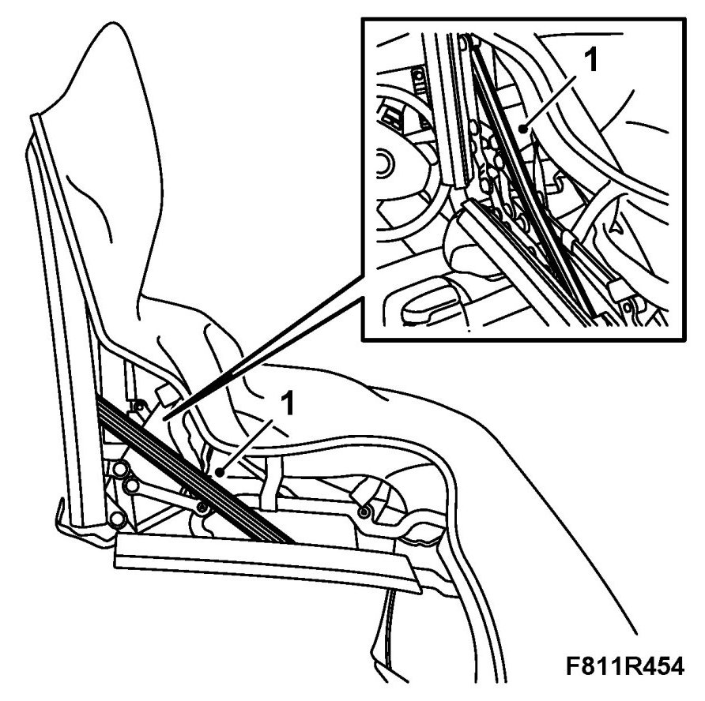
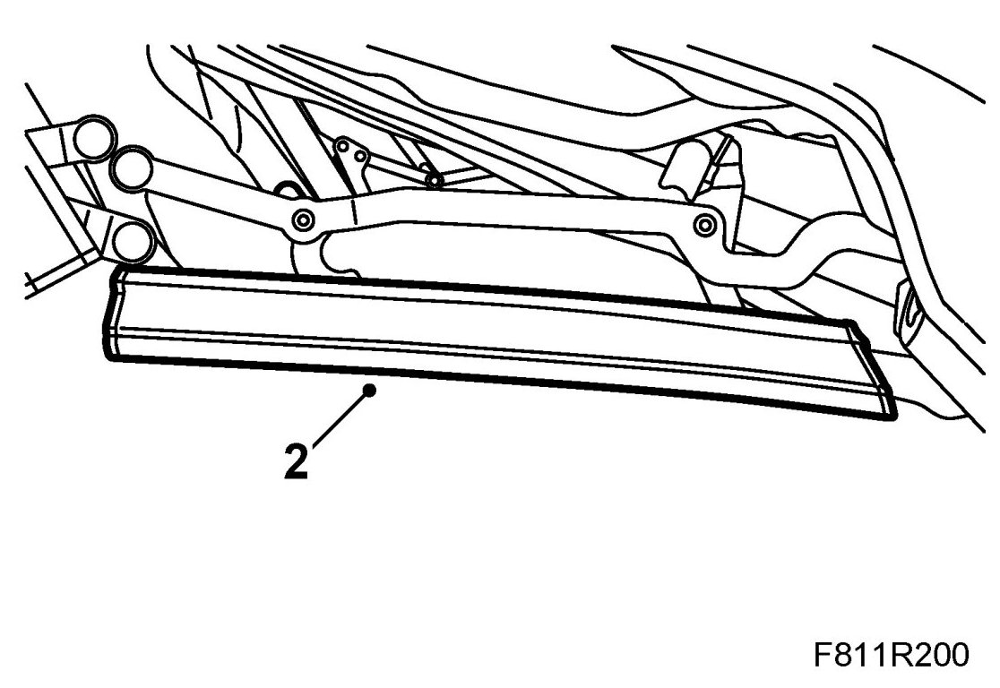
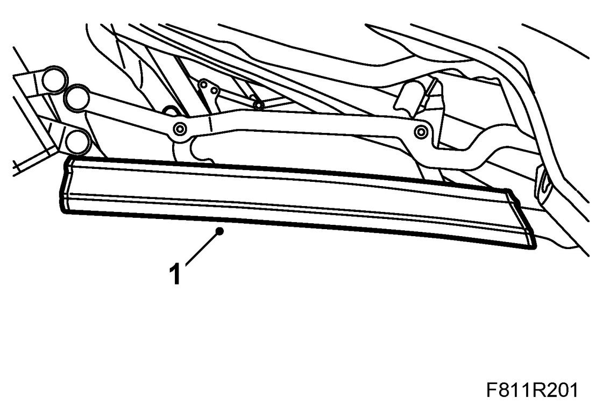

Middle Rail Seal
Middle Rail Seal
Removing
1. Operate the soft top half way down and secure it with 82 93 847 Soft top support.

2. Pull up and remove the seal from the attaching profile.

Fitting
1. Put the seal in mounting position and press it on.

2. Remove the soft top support and raise the soft top.